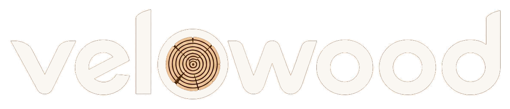

<!-- @dsCard group="Navigation" height=360 width=1200 -->
<!doctype html>
<html lang="en">
<head><link rel="stylesheet" href="../../tokens.css"><link rel="stylesheet" href="../bundle.css"><meta charset="utf-8"><title>SiteFooter — preview</title></head>
<body>
<footer class="vw-footer"><div class="vw-container">
  <div class="vw-footer__top">
    <div><a class="vw-footer__logo" href="#"></a><p style="max-width:32ch;margin-top:var(--space-4)">Wooden bicycles, close to natural life.</p></div>
    <div><h4>Bicycles</h4><ul><li><a href="#">The range</a></li><li><a href="#">Why wood</a></li><li><a href="#">Care and repair</a></li></ul></div>
    <div><h4>Company</h4><ul><li><a href="#">Workshop</a></li><li><a href="#">For hotels</a></li><li><a href="mailto:steph@velowood.co">Contact</a></li></ul></div>
    <div><h4>Language</h4><ul><li><a href="#">English</a></li><li><a href="#">Nederlands</a></li><li><a href="#">Ελληνικά</a></li><li><a href="#">Français</a></li></ul></div>
  </div>
  <div class="vw-footer__bottom"><span>© velowood</span><span>Belgium · Greece</span></div>
</div></footer>
</body>
</html>
